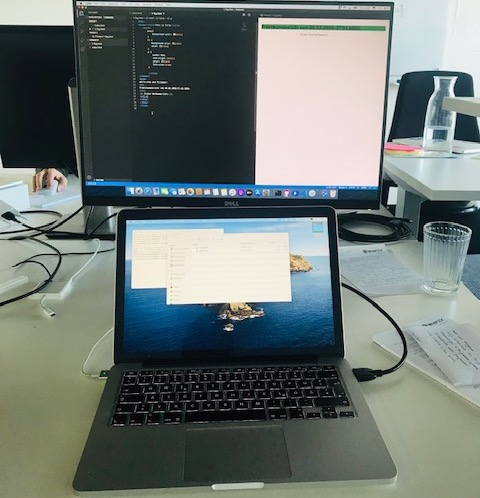

Erster Wochenbericht vom 09.03.-14.03:
Am ersten Tag began wir mit einer Führung durch das Gebäude und die Zuweissung von Arbeitsplatz und Computer. Wir mussten uns einloggen und herhielten ein Lernprogramm womit wir uns und die nächsten drei Tage mit Phyton beschäftigten. Das Spiel war so aufgegaut das man richtig Befehle in einene Vorlage einetzt und so deinen Helden durch das Spiel naviegierst. Zwischendurch gab es auch Pausen darunter die Mittagspausen die ich mit Kollegen bei essen verbrachte. Meistens machten wir um 16 Schluss. Der vierte Tag began wie immer mein einer Besprechung was wir den machen sollten: wir begannen mit dem Webseiten bauen Kurs den wir gestern zugewiesen bekommmen haben. Als wir ihn abschlossen hatten wir ein erstes Meeting zum thema Webscheiten. Wir lernten welche Programme wir benötigten und luden sie runter. Anschließend machten wir uns einen Account und begann ganz grundlegene Sachen schon mal für einene Webseite zu machen wie z.b Bilder und Texte. Anschließend machten wir noch ein paar kleine Dinge wie farben und größe der Schrift. Am nun fünftentag machten wir mit den texten weiter und erstellten Links für die nächste Internet Seite:
